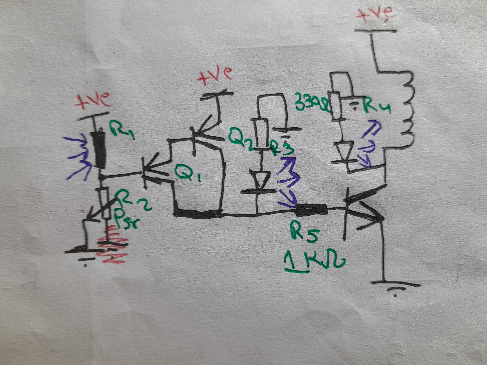
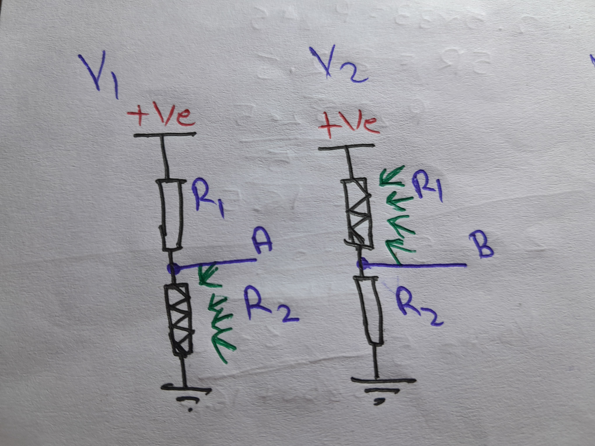
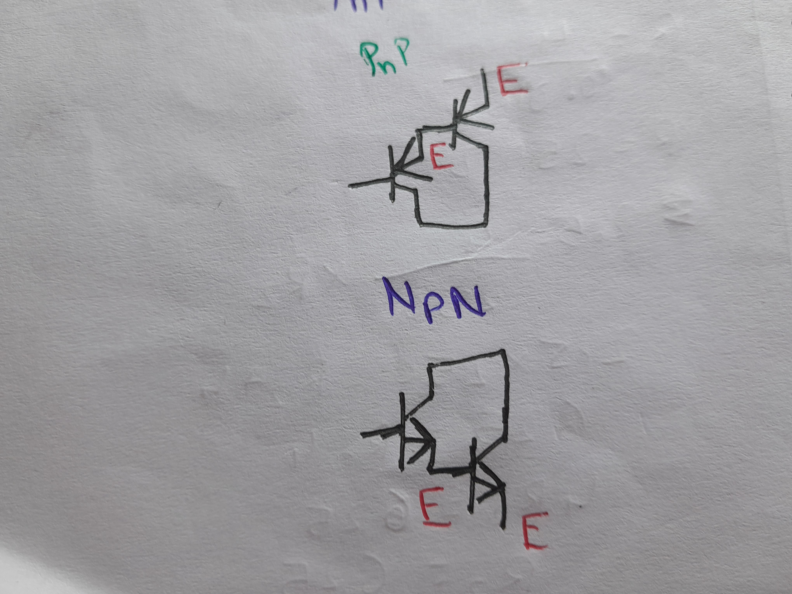

In the video, I used a component called photocell, Photoresistor OR "LDR" (Light Dependable Resistor).
It changes its resistance when light rays are falling on it (It decreases its resistance when light rays are falling on it).
Using the sensor and a resistor in a voltage divider configuration (fig2.1) and a Darlington pair (fig2.2) using transistors we can detect a change in voltage
and turn ON a mechanical switch (Relay)OR a led light. Here is the full circuit diagram-
 full schematic
 fig2.1 (light sensor)
 fig2.2 (Darlington pair using transistor)